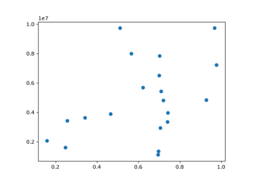
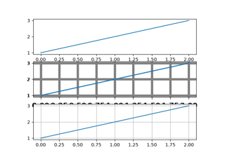
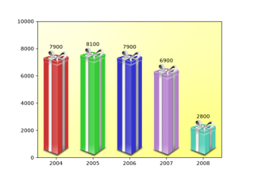
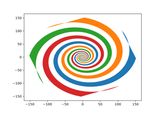
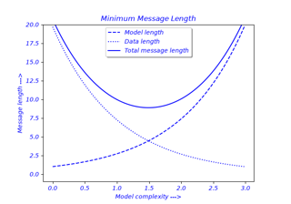
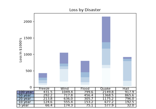

Miscellaneous# Anchored Artists Anchored Artists Identify whether artists intersect Identify whether artists intersect Manual Contour Manual Contour  Coords Report Coords Report Custom projection Custom projection  Customize Rc Customize Rc AGG filter AGG filter  Ribbon box Ribbon box Add lines directly to a figure Add lines directly to a figure  Fill spiral Fill spiral  Findobj Demo Findobj Demo Font indexing Font indexing Font properties Font properties Building histograms using Rectangles and PolyCollections Building histograms using Rectangles and PolyCollections Hyperlinks Hyperlinks Plotting with keywords Plotting with keywords Matplotlib logo Matplotlib logo Multipage PDF Multipage PDF Multiprocessing Multiprocessing Packed-bubble chart Packed-bubble chart Patheffect Demo Patheffect Demo Print image to stdout Print image to stdout Rasterization for vector graphics Rasterization for vector graphics Set and get properties Set and get properties Apply SVG filter to a line Apply SVG filter to a line SVG filter pie SVG filter pie  Table Demo Table Demo TickedStroke patheffect TickedStroke patheffect transforms.offset_copy transforms.offset_copy Zorder Demo Zorder Demo